Handoff — Subidas v2 · CloakUp · VTurb A/B (painel-fb)
Para: GPT/Codex, que vai revisar, aplicar e publicar. Autor: Claude, 24–25/09/2026. Nada foi publicado. Nenhum deploy, nenhuma escrita em produção, nenhuma escrita no CloakUp, na VTurb ou na UTMify.
0. Leia primeiro: o que foi e o que não foi validado
| Item | Situação |
|---|---|
| Código, regras e interface | Implementados e validados localmente com fixtures: 41/41 verificações Playwright, 491 testes node (as mesmas 25 falhas antigas da main, nenhuma nova), 33 scripts inline sem erro, ESLint sem erro nos arquivos novos/alterados. |
| Sessão real do CloakUp e da VTurb | Não usada. O trabalho rodou num container na nuvem, sem o navegador logado do Brandon e sem VTURB_TOKEN. Toda leitura real fica para o §7, passo 5.3. |
| Nome dos campos "cliques no botão" e "engajamento" na API da VTurb | Não confirmado. O servidor lê de forma defensiva (lista de nomes candidatos) e o ?diag=1 agora devolve os campos crus para confirmar. Sem o campo, a tela mostra —. |
Relatório A/B da VTurb (app.vturb.com/ab-test/6ab4569e…) | Não acessado (login). O A/B é detectado pelos dados: 2+ VSLs com tráfego na mesma conta/campanha dentro do período. |
| Rótulos "Julia Mor C3" e "Juliamore 1" | Não gravados por nome. Casam com as linhas JULIA MOORE C3 e C1 pelo código do link do cloaker + host; sem isso ficam como pendência. Confirmar no CloakUp (§7, passo 5.3). |
| Fórmula da UTMify × referência do painel | Não investigada na UTMify (sem acesso). Origem adotada: a string base enviada pelo Brandon (é o formato padrão da UTMify). Ver §5.4. |
| Audiência até o pitch em A/B | Decisão pendente do Brandon (§5.3). Implementado provisoriamente como soma de over_pitch, sinalizado no tooltip e aqui. |
1. Projeto, branch e estado Git
- Repositório:
brendonllialves-del/painel-fb. Diretório onde foi feito:/home/user/painel-fb(container efêmero; use seu clone). - Branch:
claude/subidas-cloakup-vturb, criada a partir demain=30cd98bc62fa0c861a269cf7b3127fd3acad14bb. - A branch não foi enviada ao GitHub de propósito: todo push no painel-fb dispara um deploy de preview na Vercel. Ela vai como
git bundlee como patch (format-patch), guardados emDashboard-IMna branchclaude/utmify-scheduled-automation-fix-970khl, pastahandoffs/painel-fb-subidas-v2/.
# no seu clone do painel-fb, com a main em 30cd98b (ou mais nova)
git fetch origin main
git bundle verify painel-fb-subidas-v2.bundle
git fetch painel-fb-subidas-v2.bundle claude/subidas-cloakup-vturb:claude/subidas-cloakup-vturb
git checkout claude/subidas-cloakup-vturb
# alternativa: git checkout -b claude/subidas-cloakup-vturb 30cd98b && git am painel-fb-subidas-v2.patch2. Arquivos criados e alterados
| Arquivo | Tipo | Propósito |
|---|---|---|
pfb-subidas-modelo.js | novo (UMD: navegador + node) | Fonte única da Subidas: ordem das colunas e migração, colunas aposentadas, colunas de métrica, separação padrão, string base da UTM, casamento de conta, associação CloakUp, preenchimento sem sobrescrever o manual, divergências de UTM, chave e saneamento da visão por usuário. |
pfb-vturb-ab.js | novo (UMD) | Regras de consolidação VTurb (uma VSL ou A/B) usadas por Campanhas Meta, Subidas e Todas; células empilhadas com rótulo e fórmula das perdas. |
index.html | alterado | Scripts novos no <head>; Campanhas Meta (colunas Plays e Engajamento, sub-linhas, perdas, A/B, CMP.contasPer, CMP.chaveCr); aba Subidas inteira (§4). |
api/campanhas-live.js | alterado | VTurb: detalhe por VSL (porVsl), cliques e engajamento defensivos, campos crus no ?diag=1; sub_mapa na leitura padrão do pref2; vturbTesting exportado para testes. |
lib/campanhas-access.js | alterado | Projeção de permissões passa porVsl (só com a coluna Nome liberada), cliques, engaj, semPitch; cada usuário só grava a própria sub_view_*. |
pfb-access-policy.js | alterado | plays e engaj são aliases da permissão de vis (Views VSL): nada novo no admin, nada liberado a mais. |
tools/cloakup-coletor.mjs | novo | Coletor somente leitura para o Mac do Brandon (Playwright na sessão já logada; bloqueia toda requisição que não seja GET/HEAD/OPTIONS). Gera cloakup-coleta.json. |
tools/cloakup-extrator.cjs | novo | Função pura que transforma as respostas JSON do app do CloakUp no formato da Subidas. |
tools/subidas-validacao/servidor.cjs | novo | Servidor local de fixtures (2 usuários, 5 ofertas, VTurb com A/B e troca histórica, coleta CloakUp). |
tools/subidas-validacao/validar.cjs | novo | Validação Playwright com 41 verificações, relatório JSON e prints. |
tests/subidas-modelo.test.cjs, tests/vturb-ab.test.cjs, tests/vturb-server-porvsl.test.cjs, tests/cloakup-extrator.test.cjs, tests/fixtures/cloakup-respostas.sample.json | novos | Testes das regras, do servidor, da projeção de permissões e do extrator. |
docs/subidas-v2/HANDOFF.md / .html, pendencias-conhecidas.json, evidencias/ | novos | Este documento, pendências conhecidas nos dados reais embutidos e as evidências. |
Mapa do código no index.html (procure pelos marcadores, as linhas mudam):
var SUB_CDEF=·function colsInit·VISAO POR USUARIO·function subV2Migrate— estrutura, visão por usuário e migração única.campanhas -> Subidas·function subCmp·function metCel·function celInner·function render(keepFocus)— tabela, Ads, VSL/A/B e métricas.menus da Subidas v2— separações, seleção com alinhamento em lote, período, Ads.CLOAKUP v2·function subEspelhaCloakup·window.subPendAbre— associação, preenchimento e painel de pendências.<style id="pfb-subidas-v2">— altura fixa, UTM com o final visível, métricas, tema claro, histórico.- Campanhas Meta:
function vtZera/vtSoma/vtFecha,var COLS=[,M.vis =,CMP.contasPer.
3. Rotas, dados e variáveis de ambiente
- Nenhuma rota nova, nenhuma tabela, nenhuma migração SQL, nenhuma variável de ambiente nova.
- Leituras:
GET /api/campanhas-live(COD) e?fonte=pro(Prosperidade, Prosperità, Vitalité);?fonte=vturb&de&ate;?fonte=pref2(padrão e&k=). - Gravações (todas já existentes):
/api/prefs(sub_cells,sub_cols,sub_fmt…, compartilhadas) e?fonte=pref2com as chaves:sub_view_<usuario>— visão de cada usuário (larguras, ordem, visibilidade, alinhamento por célula, separações, altura de linha, período). Chave derivada deuser.id(pfb-subidas-modelo.js · chaveVisao). O servidor recusa a de outro usuário (dono excluído da trava).sub_mapa— vínculos CloakUp confirmados por uma pessoa ({vinculos:{idDaLinha:códigoCloakUp}, em, quem}).cloakup— coleta do CloakUp (já existia; só o dono grava). A tela também importa um JSON local sem gravar.bk|subidas_antes_v2_<ts>— backup único do que estava em Conf e VSL2.
- Variáveis já existentes e usadas:
VTURB_TOKEN.
4. O que mudou na Subidas
- Ordem global (nova padrão para todos): Conta · Oferta · Perfil · Ads · Domínio · Nome da campanha no Cloaker · Página segura · Página de oferta · Link do Cloaker · UTMs; depois Página (Card na Prosperità) e Offer; colunas criadas pelo usuário vêm depois. Nome de coluna dado à mão é preservado.
- Conf e VSL2 removidas da tabela, dos dados embutidos (9 links de VSL2 e 35 marcas de Conf da planilha) e das células editadas. Antes de apagar, tudo vai para
bk|subidas_antes_v2_*(inclui os valores da planilha). As exclusões saem em lotes de 15 para não disparar a trava anti-apagão dopfbSave, e ficam no histórico com "restaurar". - Prosperità: "Página" aparece como "Card" (mesmos dados). Em Todas: "Página / Card".
- Oferta: texto livre da planilha vira o chip marcado (☑) da oferta que ele nomeia (ou da aba da linha quando vazio). O menu de múltiplas ofertas continua igual.
- Ads: vem das Campanhas Meta. Criativos que já rodaram na conta (período máximo carregado), compactos: contador + chips, sem aumentar a linha; clique abre a lista completa com anúncios e gasto; o texto antigo da célula vira "anotação" no tooltip.
- Área de métricas à direita (não editável, entra na seleção e na soma): VSL · A/B, Views VSL, Plays, Play Rate, Engajamento, Ret. Pitch, Aud. Pitch, no Período de visualização escolhido na própria aba (mesmas opções e calendário da Campanhas Meta; salvo por usuário). Sem VTurb no período, a coluna VSL mostra a última VSL registrada (texto antigo da coluna VSL, preservado).
- Aba "Todas": as ofertas juntas (sem Contas em Aquecimento); arrastar linha fica desligado nela (a ordem manual é por oferta).
- Planilha: altura fixa (44 px, ajustável por usuário),
nowrape corte em todas as células; UTMs alinhadas à direita com o final visível (corte à esquerda, viadirection: rtl+<bdi>); o resto começa à esquerda. A formatação antiga de alinhamento (sub_fmt.al) deixou de ser aplicada; cor, negrito e tamanho continuam. - Seleção: arrastar seleciona (inclui métricas); quantidade e soma aparecem no rodapé; botão direito na seleção alinha à esquerda, ao centro ou à direita, ou volta ao padrão, e copia. Os botões E/C/D da barra fazem o mesmo. Tudo salvo só para o usuário. Não existia opção de "ajustar/quebrar texto" no componente, então não foi criada (padrão sem quebra).
- Separações: botão direito no cabeçalho (ou na alça de largura) cria/remove/limpa/volta ao padrão. Padrão: Domínio → Link do Cloaker. Por usuário.
- Largura, ordem (◀ ▶ e arrastar) e ocultar colunas base passam a ser por usuário. Criar, renomear e excluir colunas próprias continuam valendo para todos.
- Histórico: abre abaixo do botão de tema (antes o ✕ ficava atrás dele), ✕ de 34 px, fecha com Esc. Tema claro: cabeçalhos e histórico acompanham o tema (a regra antiga não pegava porque
.pfb-glass-allfica no próprio:root).
5. Regras
5.1 Associação Subidas ↔ CloakUp (ordem de confiança)
- Vínculo confirmado por uma pessoa (
sub_mapa.vinculos). - Código do link do cloaker da linha = código da campanha, com o mesmo host e a mesma oferta do nome da campanha. Motivo real:
wi1lq6rvqmexiste emck.frequencyofgod.online(Beatriz Morais 3, Prosperidade) e emck.drsebastienbeley.online(Julia Moore C1, Vitalité). - Nome da conta, só quando há uma única linha candidata na oferta (mesmo primeiro nome + mesmo número de conta, ou número da agência).
- O resto vira pendência: campanha sem linha, mais de uma linha possível, linha sem campanha, oferta desconhecida, UTM divergente, UTM fora da string base.
- Bolinha verde e emojis do nome só como apoio (
ativa), nunca como chave. - Preenche Domínio, Nome da campanha, Página segura, Página de oferta, Link do Cloaker e UTM só em célula vazia ou preenchida antes pelo automático (marca invisível
). Valor digitado à mão nunca é sobrescrito.
5.2 Associação com a VTurb
- Pelo ID da campanha (
utm_campaign = nome|id) e do anúncio (utm_content = nome|id), nunca pelo nome da VSL. Nome de campanha e de VSL podem mudar sem quebrar. - A linha da Subidas é uma conta: casa com as contas que a Campanhas Meta monta (
CMP.contasPer), e as métricas são as dessas campanhas no período. Campanhas e anúncios diferentes não se misturam só porque usam a mesma VSL. - Histórico: o servidor devolve a VTurb por dia e por VSL (
porVsl), e o período soma só os dias pedidos. Uma campanha que usou a VSL A e depois a B aparece como A/B no período que cobre os dois, e com uma só VSL no período que cobre um. utm_idnão é usado: o ID já vem dentro doutm_campaigne doutm_content.
5.3 Fórmulas (A/B = 2+ VSLs no mesmo recorte)
| Métrica | Uma VSL | Grupo A/B |
|---|---|---|
| Visualizações, únicas, Plays, únicos, Cliques no botão | valor da VSL | soma (a VTurb não expõe identificador entre players para deduplicar únicos) |
| Play Rate | plays únicos ÷ views únicas | média aritmética das VSLs |
| Engajamento | média da VSL (ponderada por views) | média aritmética das VSLs |
| Retenção até o pitch | over ÷ (over + under) | média aritmética das VSLs |
| Audiência até o pitch | over_pitch | provisório: soma de over_pitch. DECISÃO PENDENTE |
| Perda até play | (1 − plays ÷ visualizações) × 100 | idem, com as somas |
| Perda até clique | (1 − cliques no botão ÷ audiência até o pitch) × 100 | idem |
- Sem dado confiável:
—(pitch desconhecido, campo ausente, denominador zero, plays > views). Zero nunca é inventado. - Decisão pedida ao Brandon: Audiência até o pitch em A/B deve ser (a) soma das VSLs (atual), (b) média, ou (c) pessoas únicas? (c) só é possível se a VTurb fornecer um identificador de sessão entre players, o que a API usada não fornece. Trocar a regra = uma linha em
pfb-vturb-ab.js · fecha(). - Impressões e Cliques continuam UTMify/Facebook; "views pág." embaixo de Cliques continua igual.
5.4 UTM
- String base fixa:
utm_source=FB&utm_campaign={{campaign.name}}|{{campaign.id}}&utm_medium={{adset.name}}|{{adset.id}}&utm_content={{ad.name}}|{{ad.id}}&utm_term={{placement}}+&+ parâmetro exclusivo lido da campanha correta do CloakUp. - UTM antiga (
sub1=…) só vira a base quando o parâmetro dela é o mesmo que o CloakUp informa para a campanha casada. Parâmetro diferente = pendência. Sem CloakUp confirmado = pendência "fora da string base". Nada gerado por aproximação. - Nos dados embutidos hoje: 7 linhas da Bulgária, 7 de Prosperidade, 2 de Nutra e as 3 da Vitalité estão fora da string base (
pendencias-conhecidas.json).
6. Validação local (comandos exatos)
cd painel-fb # na branch claude/subidas-cloakup-vturb
npm install # só para o ESLint
node --test tests/*.test.cjs # esperado: 491 testes, 25 falhas = as mesmas da main 30cd98b
node --test tests/subidas-modelo.test.cjs tests/vturb-ab.test.cjs tests/vturb-server-porvsl.test.cjs tests/cloakup-extrator.test.cjs # 25/25
NODE_PATH=$(npm root -g) node tools/subidas-validacao/validar.cjs ./validacao-subidas # 41/41 (precisa do Playwright com Chromium)
node_modules/.bin/eslint pfb-vturb-ab.js pfb-subidas-modelo.js tools/cloakup-*.{cjs,mjs} tools/subidas-validacao/*.cjs lib/campanhas-access.js pfb-access-policy.js # 0 erros
node tools/subidas-validacao/servidor.cjs # para abrir http://localhost:4317 e navegar à mão (token de teste: localStorage pfb_auth_v2 = pfb4.brandon ou pfb4.matheus)Verificações (relatório em docs/subidas-v2/evidencias/relatorio.json):
- 1.x ordem das colunas, Conf/VSL2 fora, Card na Prosperità, backup + remoção única, zero erro de JavaScript.
- 2.x uma campanha de cada oferta (Romênia, Bulgária, Prosperidade, Prosperità, Vitalité) com valores recalculados pela regra, aba Todas, chip de oferta, Ads.
- 3.1 / 4.1 uma VSL (hoje) e troca histórica de VSL (7 dias = A/B com as duas, views somadas, média nas taxas).
- 5.x CloakUp: preenchimento completo, "Juliamore 1" pelo código, bloqueio do código repetido em outro domínio, UTM antiga promovida só com o mesmo parâmetro, divergência mantida, painel de pendências.
- 6.x média × razão das somas no A/B, soma de cliques, perdas,
—sem pitch/sem engajamento. - 7.x separação padrão e criada, tema claro/escuro ida e volta, histórico e ✕ fora do botão de tema, Esc.
- 8.x UTM estreitada sem quebra, mesma altura, final visível; outra coluna idem.
- 9.x seleção + rodapé com soma, alinhamento em lote salvo só para o Brandon, segundo usuário não herda, grava na própria chave, Brandon reabre com o dele.
- C.1 Campanhas Meta com Plays/Engajamento e as mesmas sub-linhas e médias A/B.
Evidências: docs/subidas-v2/evidencias/01…15-*.jpg.
7. Passos para revisar, aplicar e publicar
- Revisar:
git diff 30cd98b...claude/subidas-cloakup-vturb -- index.html(procure pelos marcadores do §2). Conferir que nada de e-mail/automação/snapshot/SQL foi tocado (não foi). - Mesclar com a main atual:
git merge origin/main. Conflito provável só se alguém mexeu no bloco da Subidas ou nosvtZera/vtSoma/vtFecha/COLSda Campanhas Meta. Os?v=depfb-vturb-ab.js,pfb-subidas-modelo.jsepfb-access-policy.jsnoindex.htmldevem ser o sha1[:12] do arquivo; se mexer num deles, recalcule comsha1sum arquivo | cut -c1-12. - Rodar o §6 inteiro e comparar as falhas com a
maindo momento. - Decidir com o Brandon a Audiência até o pitch em A/B (§5.3) antes de publicar, ou publicar com a soma e avisar.
- Publicar (ff/merge na
main+ push, como de costume). Após o deploy:- Conferir os hashes servidos:
curl -s https://painel-fb.vercel.app/ | grep -o 'pfb-subidas-modelo.js?v=[0-9a-f]*'. - Logado como dono:
https://painel-fb.vercel.app/api/campanhas-live?fonte=vturb&diag=1&of=bul&de=AAAA-MM-DD&ate=AAAA-MM-DD→ vercampos,campoCliqueecampoEngajamento. Se vieremnull, a VTurb não manda esses dados nessa rota e as colunas ficam—; se o nome real for outro, acrescente emVT_CLIQUE_CAMPOS/VT_ENGAJ_CAMPOS(api/campanhas-live.js). - No Mac do Brandon, com o Chrome logado no CloakUp:
NODE_PATH=$(npm root -g) node tools/cloakup-coletor.mjs --cdp http://127.0.0.1:9222 --dump(Chrome aberto com--remote-debugging-port=9222). Conferir no terminal "Requisições de escrita bloqueadas". Se o total de campanhas vier 0, abrircloakup-respostas-brutas.jsone ajustar os nomes de campo emtools/cloakup-extrator.cjs(e o teste com a fixture). - Subidas → 🔗 CloakUp → 📥 Importar coleta → revisar pendências, ligar manualmente o que for confirmado (grava
sub_mapa). Para deixar a coleta para todos, o dono gravacloakupno pref2 (window.pfbSave2('cloakup', coleta)no console) — passo consciente, fora do coletor. - Confirmar no CloakUp os nomes "Julia Mor C3" e "Juliamore 1" contra as linhas JULIA MOORE C3/C1.
- Conferir os hashes servidos:
- Primeira abertura em produção faz sozinha, uma única vez: reordena
sub_cols, faz o backup e remove Conf/VSL2. Conferir?fonte=pref2&ns=bk(lista contémsubidas_antes_v2_*). - Reverter:
git revertdo merge. A remoção de Conf/VSL2 volta pelo backupbk|subidas_antes_v2_*ou pelo 🕘 Histórico (restaurar item a item). Visões por usuário (sub_view_*) podem ficar; são ignoradas pela versão anterior.
Galeria das evidências
{kind=link}
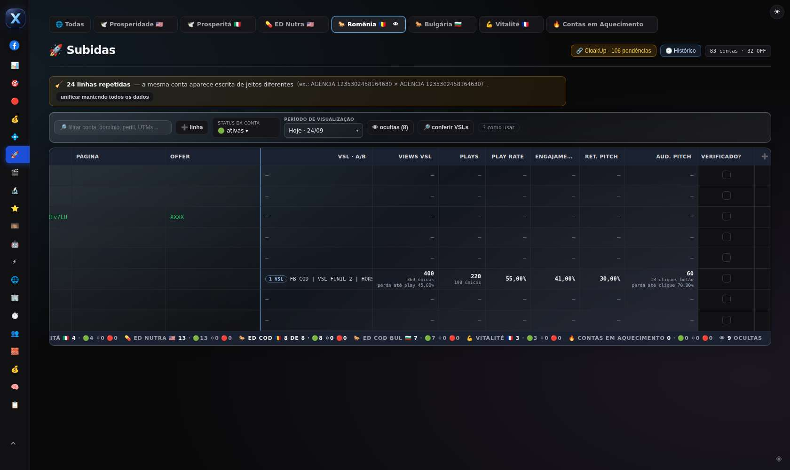
{kind=link}
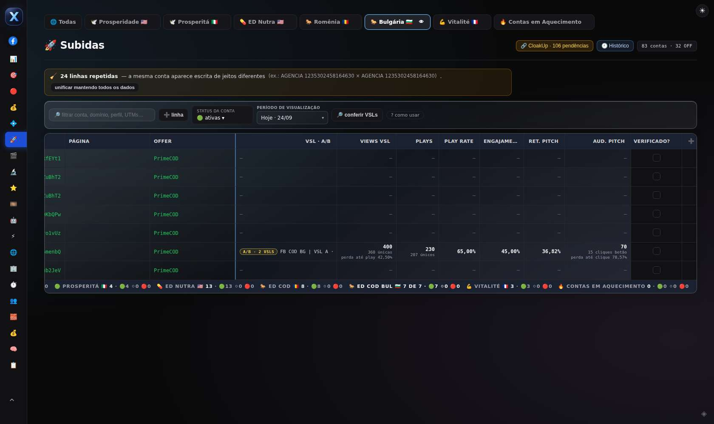
{kind=link}
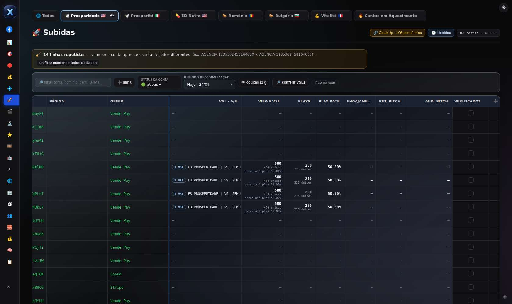
{kind=link}
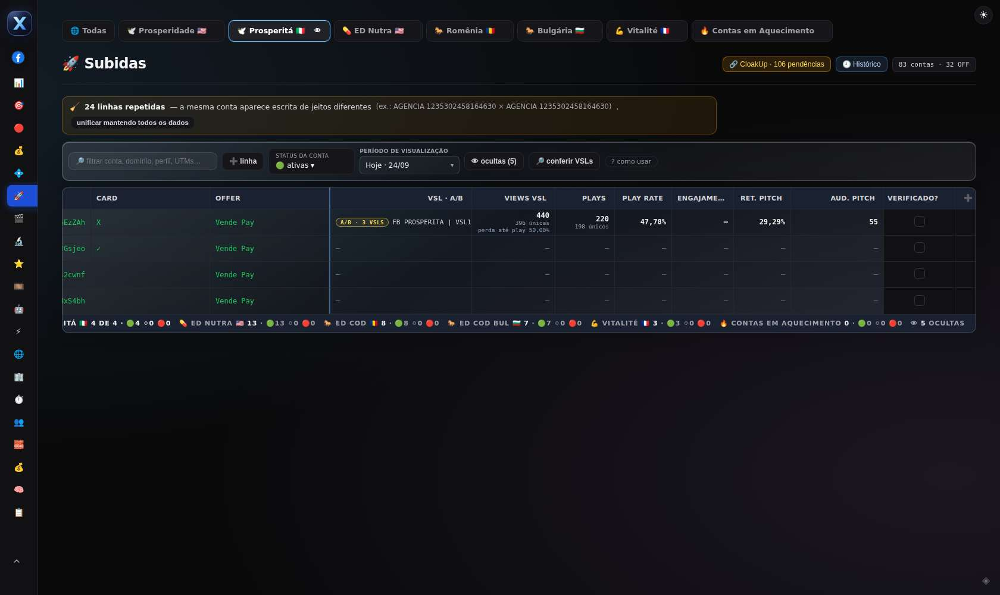
{kind=link}
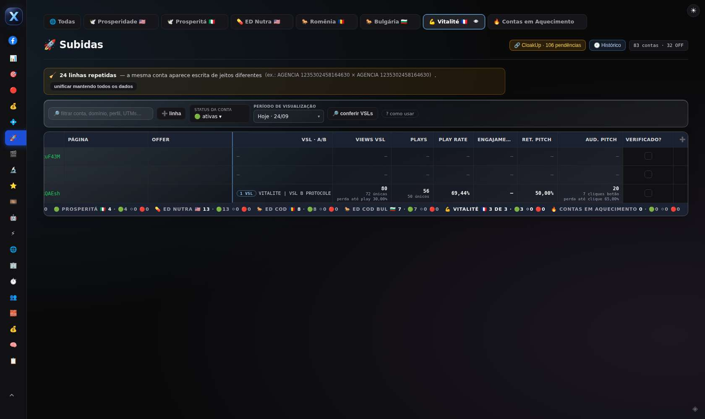
{kind=link}
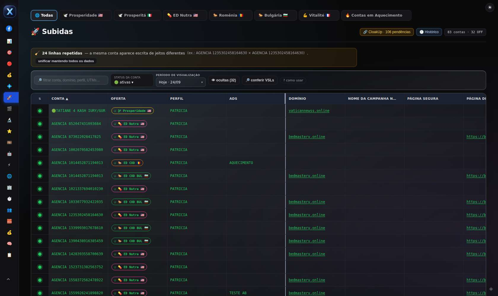
{kind=link}
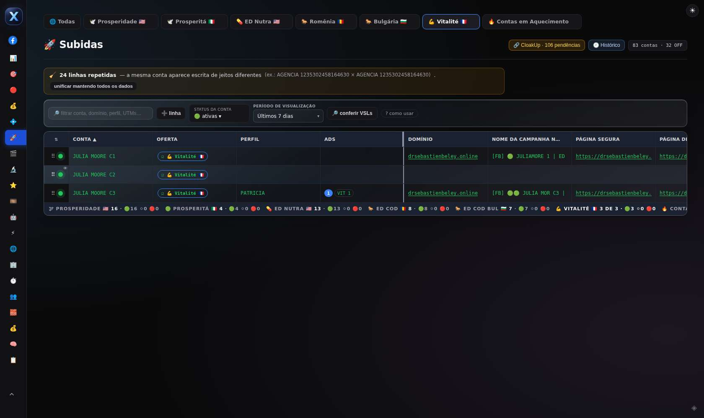
{kind=link}
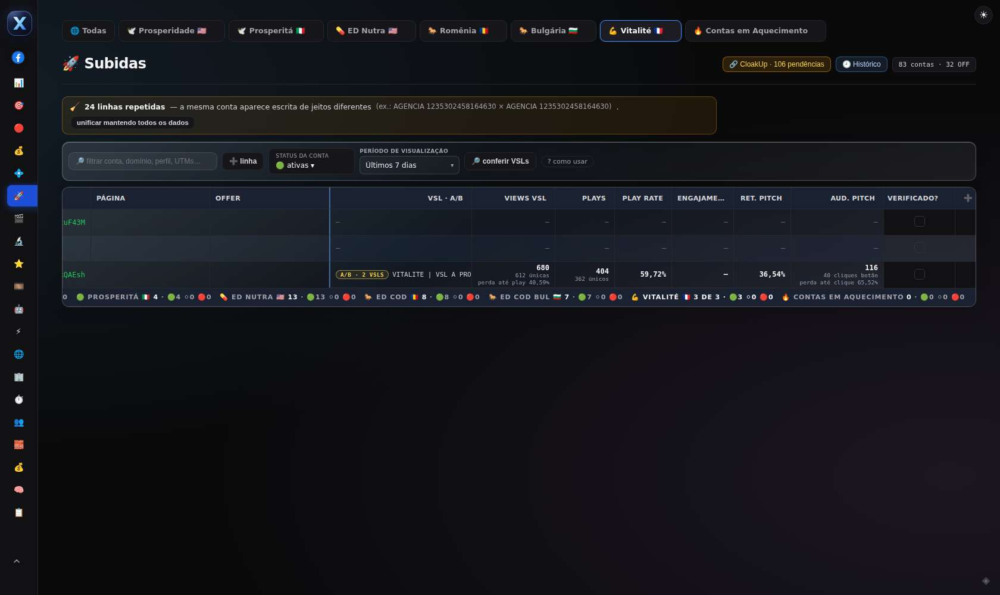
{kind=link}
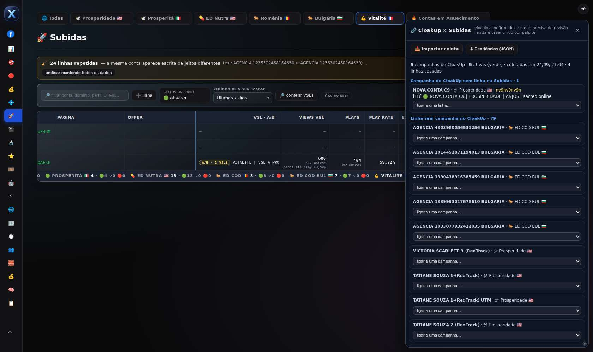
{kind=link}
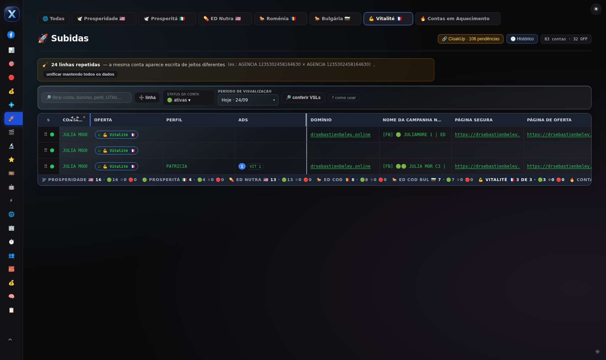
{kind=link}
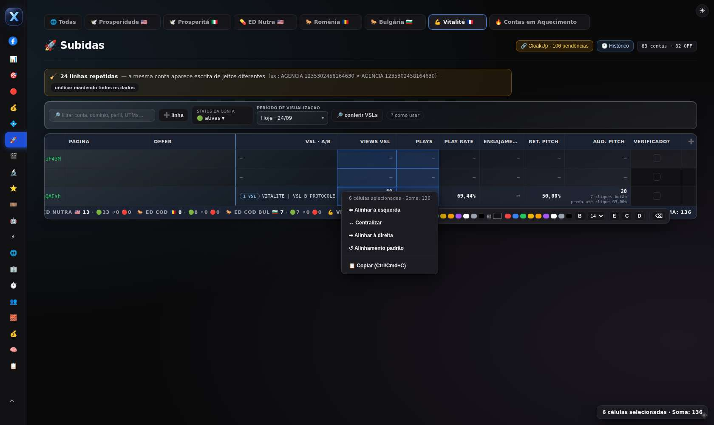
{kind=link}
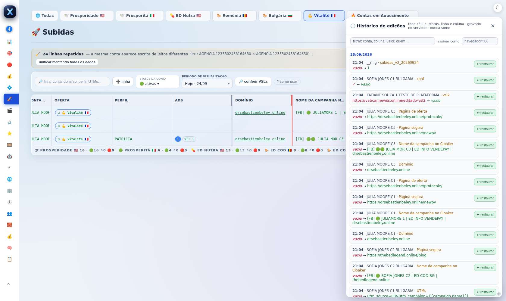
{kind=link}
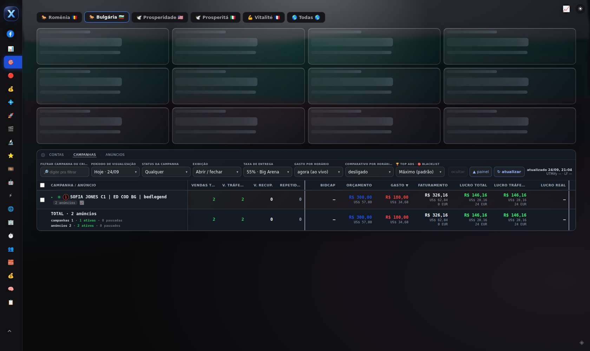
{kind=link}
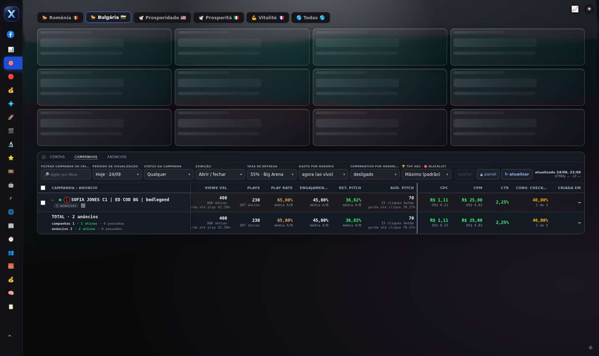
{kind=link}
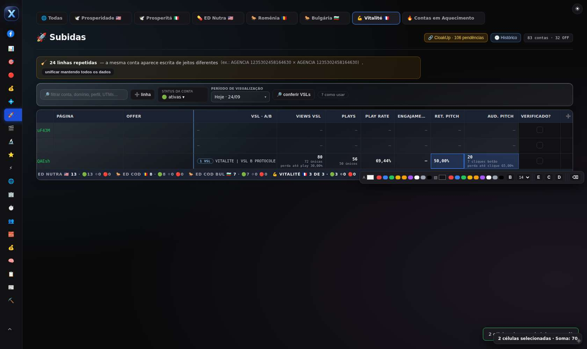